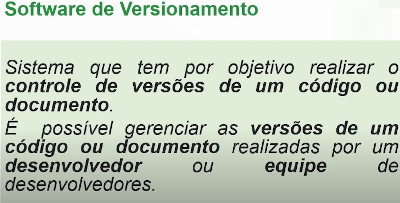
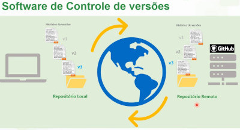
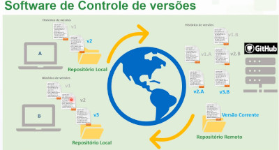
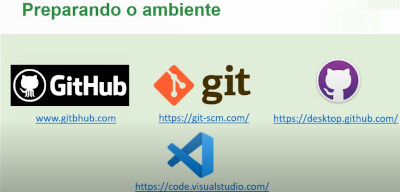

Para que serve o Git?
O Git serve para gerenciar as versões de um software, permitindo o controle de histórico e o versionamento. Ele melhora a colaboração da equipe, uma vez que o sistema se responsabiliza pela organização das alterações.


Sobre os tipos de Versionamentos (VCS)
Antes de falar dos tipos, é preciso explicar o básico sobre como ocorre o versionamento. Basicamente, ele consiste em uma versão do seu código que pode ser guardada na sua própria máquina ou enviada para um servidor central ou remoto. O Git oferece o versionamento tanto local quanto para um servidor remoto. Na imagem acima, vemos ilustrada a conexão entre um repositório local e um repositório remoto (o repositório, em termos brutos, é uma pasta com os seus arquivos).
O versionamento centralizado realiza o controle de versões em um servidor central. É como se todos os computadores de um escritório estivessem ligados a um servidor próprio da empresa. Para que o trabalho funcione, é necessário estar sempre conectado a esse servidor central. Esse sistema é mais antigo, porém ainda é utilizado; os sistemas de controle de versão (VCS) que representam esse modelo são o CVS e o SVN. Ele não possui versionamento local e é totalmente dependente do servidor.
O versionamento distribuido tem um repositório local e um repositório remoto, o usuário tem o controle se quer atualizar o repositoro remoto ou se quer deixar o repositório apenas em sua maquina, este sistema é mais novo e melhor, os softwares mais notaveis são o BitKeep e o Git.
Qual a diferença entre Git e GitHub?
Em poucas palavras, a diferença é que o Git faz o versionamento e o GitHub hospeda esse versionamento. Os dois são distintos, mas se complementam. Na minha opinião, juntos eles se fundem e formam o melhor ecossistema de versionamento. O Git serve para versionar qualquer código-fonte, enquanto com o GitHub é possível acessar esse código de qualquer lugar. O GitHub também pode ser considerado uma rede social para desenvolvedores.
Ambientes para trabalhar com versionamento:

O GitHub Desktop é uma interface gráfica para administrar a relação entre o Git e o GitHub. É possível realizar as mesmas ações sem o GitHub Desktop, porém, para isso, é necessário ter conhecimento sobre o uso do terminal.